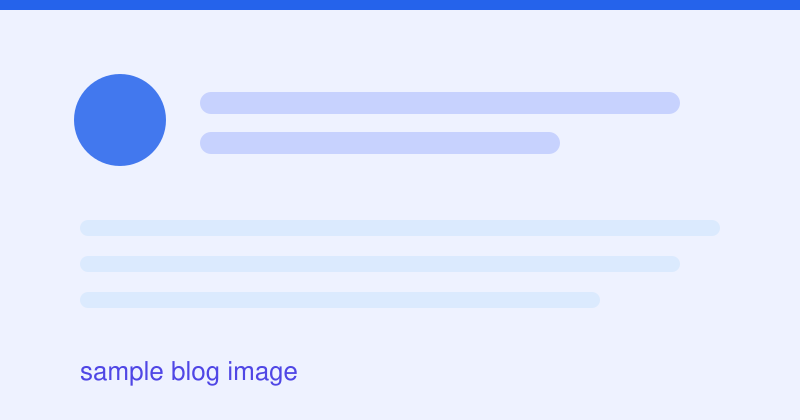

Welcome to the Blog

This is the first post on the blog. On the blog index it shows a title, a date, a description, a cover image, and the short snippet you just read.
Everything below the <!--more--> marker only appears on the full post page. That is how the blog stays scannable: each entry teases the opening, and the Continue Reading link opens the whole thing.
Adding a post
Create a new file in content/blog/ named like 2026-10-20-my-post.md, give it a small header, and run ./build.sh:
Title: My Post
Date: 2026-10-20
Description: One line about the post.
Image: my-photo.jpg
Post text goes here.
Files are listed newest first based on their name, so the YYYY-MM-DD- prefix keeps everything in order.
Images
Drop an image into assets/images/ and reference it by name. This page uses a cover image:
You can also link between pages, for example to the projects page — the build script fixes up relative paths so links work from any folder.